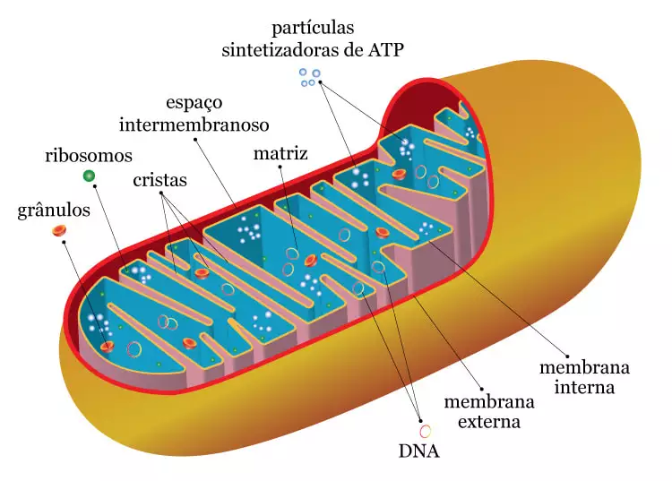

As mitocôndrias são organelas envoltas por uma membrana dupla, responsáveis pela respiração celular e produção de ATP, a principal fonte de energia da célula. Elas possuem seu próprio DNA, permitindo sua multiplicação independente.

Além da produção de energia, as mitocôndrias também regulam o metabolismo e a apoptose, ou morte celular programada, desempenhando um papel crucial na saúde celular.